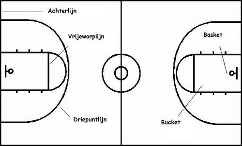

Natuurlijk zijn er ook regels bij basketbal. Hier leg ik de basis regels uit van de sport.
De regels zijn onderverdeeld in drie delen: Het basketbalveld, Fouten, vrij worpen en overtredingen en puntentelling.
Het basketbalveld
Het basketbalveld bestaat uit een rechthoekig oppervlak met aan beide korte kanten een basket.
In de NBA is het basketbalveld 28 meter bij 15 meter groot.
Het veld heeft twee zij- en achterlijnen, een middenlijn, een vrijeworplijn en een driepuntlijn.
Daarnaast is er nog een middencirkel en een bucket, het gebied direct om de basket.
In de middelcirkel vindt zich de sprongbal plaats.
Bij een sprongbal neemt één speler van ieder team plaats in de middencirkel met een voet aan de middenlijn.
De scheidsrechter gooit de bal recht omhoog en wanneer de bal het hoogste punt heeft bereikt, proberen de twee spelers zo snel mogelijk de bal te pakken.

Fouten
Daarnaast is dribbelen ook belangrijk bij basketbal.
bij dribbelen probeer je met je vingertoppen te dribbelen, dus niet met de hele hand.
Zo kan je goed richten waar je wilt dribbelen.
Ook dribbel je de bal niet hoger dan je middel van je lichaam.